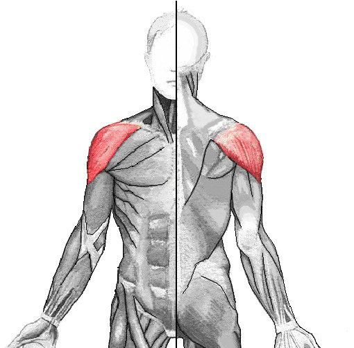
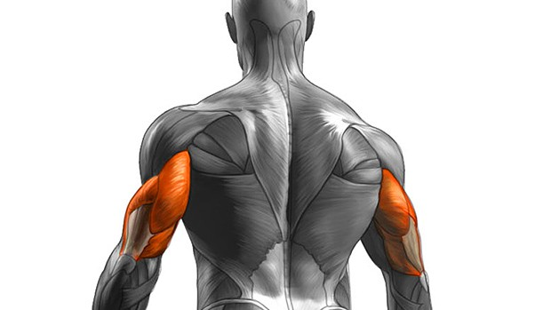
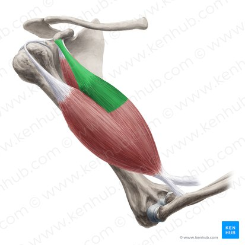
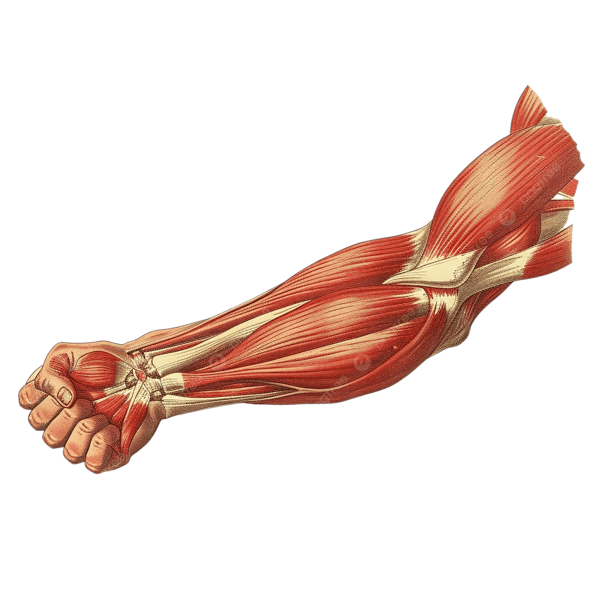

HIPERTROFIA DE BRAZOS: VIERNESOrden de Reclutamiento NerviosoIniciamos el entrenamiento atacando el deltoides, pasamos a la cadena extensora (tríceps), continuamos con la flexora (bíceps) y finalizamos reventando los antebrazos. Estructura exacta de 1 serie de calentamiento y 2 series pesadas al fallo total por ejercicio. 01 / Hombros• Laterales en Máquina: Bombeo continuo y estricto (1 calentamiento, 2 efectivas full fallo). • Press Militar: Fuerza base de empuje vertical (1 calentamiento, 2 efectivas full fallo).
 02 / Tríceps• Press Francés Inclinado: Estiramiento de la cabeza larga (1 calentamiento, 2 efectivas full fallo). • Extensión en Polea con Barrita: Compresión pesada hacia abajo (1 calentamiento, 2 efectivas full fallo).
 03 / Bíceps• Curl Predicador en Máquina: Contracción de pico aislada (1 calentamiento, 2 efectivas full fallo). • Curl Martillo en Polea: Grosor e impacto del braquial (1 calentamiento, 2 efectivas full fallo).
 04 / Antebrazos• Curl de Antebrazo en Polea Prono: Enfoque extensores superiores (1 calentamiento, 2 efectivas full fallo). • Curl de Antebrazo en Polea Supino: Enfoque flexores inferiores para agarre de acero (1 calentamiento, 2 efectivas full fallo).
 |